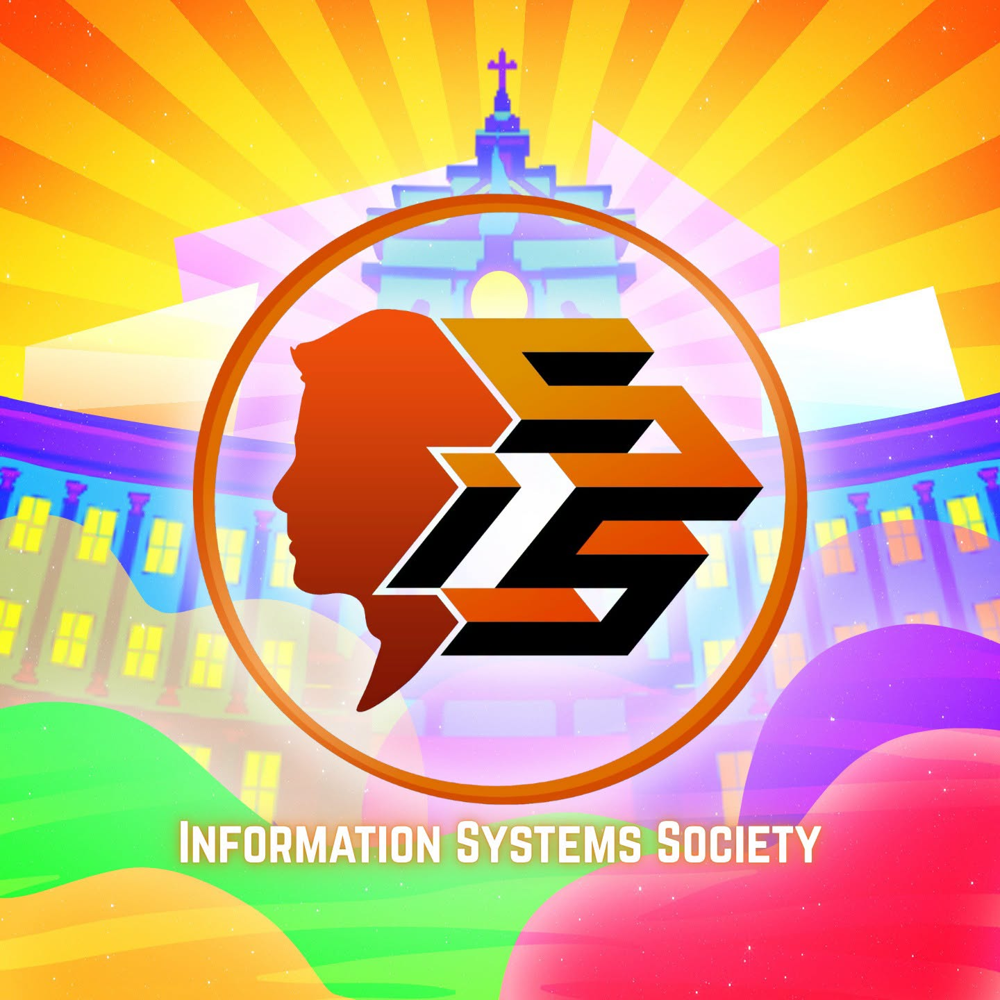
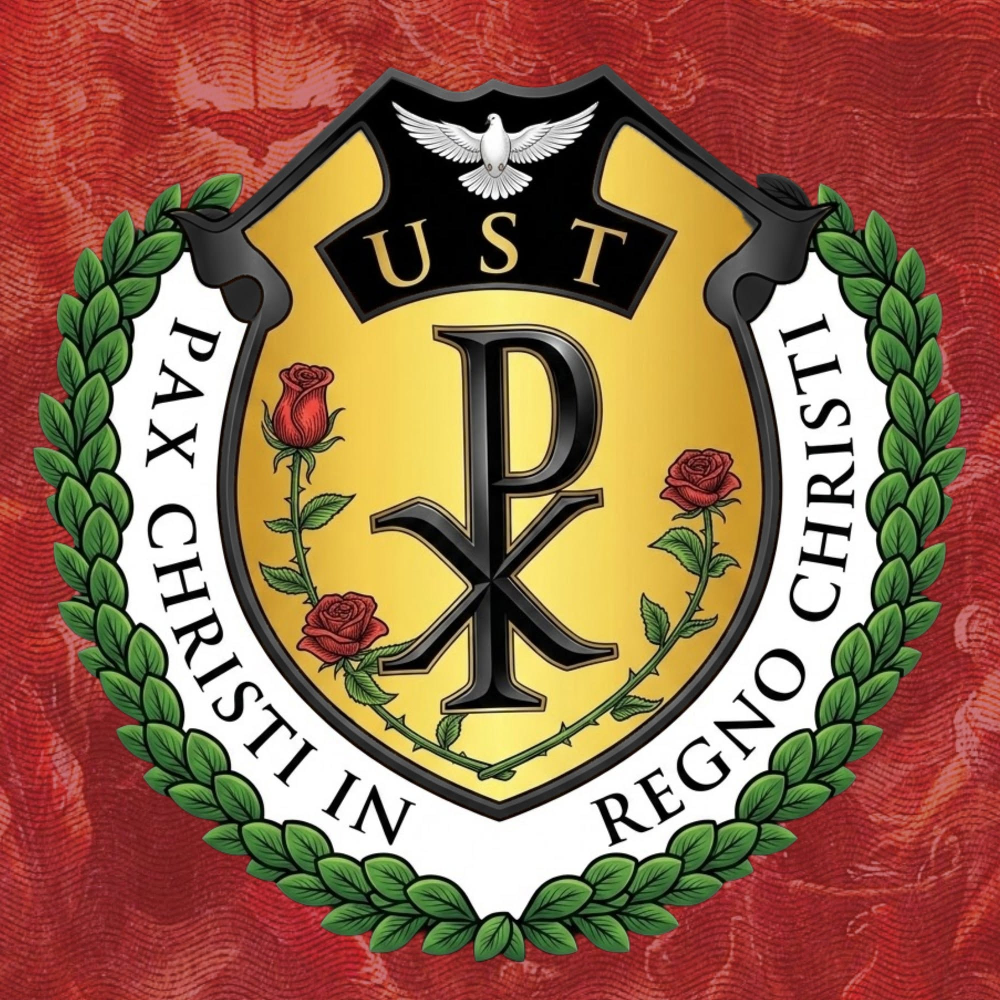
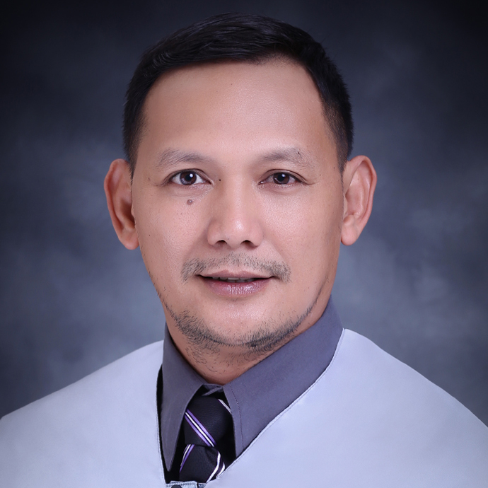
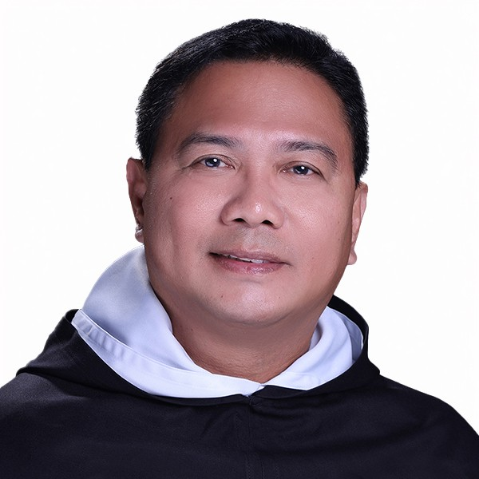
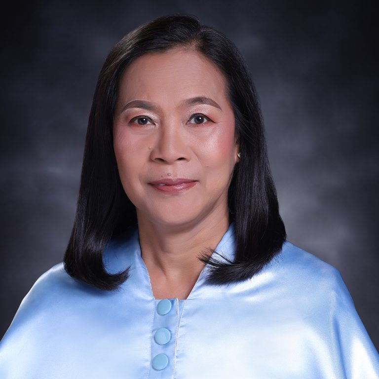
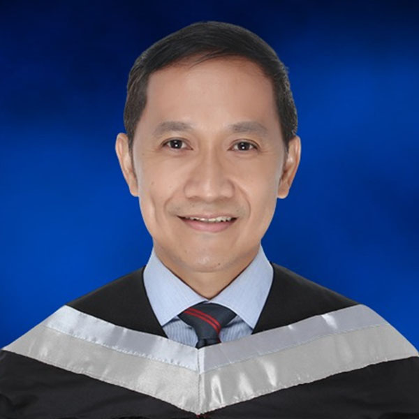

The people, organizations, activities, and community behind the
College of Information and Computing Sciences.
Society of Information Technology Enthusiasts (SITE)
SITE (Society of Information Technology Enthusiasts) is the mother
organization of UST IT students, or ITomassinos. It aims to help
students develop the skills and competencies needed to become
competent, compassionate, and committed IT professionals.
Computer Science Society
The Computer Science Society serves its purpose to be an
organization that encourages, develops, and enhances the skills and
character of its members through various activities, seminars, and
training workshops that foster technological innovation.
Information Systems Society

ISS (Information Systems Society) is the student organization for
UST's Information Systems program. It helps students develop their
technical skills, leadership, and professional values to become
competent, compassionate, and committed IS professionals.
CNAG-IICS
CNAG-CICS (Cisco Networking Academy Gateway) is a UST CICS
organization focused on advancing Information and Communications
Technology (ICT) through research, community development, and
knowledge sharing.
Pax Romana - IICS

Pax Romana - ICS Unit is a Catholic student organization that
promotes faith, critical thinking, and holistic growth. It
encourages students to serve others and build a just and peaceful
community. It aims to form competent and compassionate
professionals who serve the Church, society, and nation.
Administrators

Asst. Prof. Christopher D. Ladao, MCS
Dean

Rev. Fr. Gaspar Sidaya, O.P.
Regent

Assoc. Prof. Perla P. Cosme, MSCS
Assistant Dean

Inst. Edmund D. Tucay, MSCS
College Secretary
Updates
Org Hunt 2026
Org Hunt 2026 gives Thomasians the opportunity to explore different
student organizations at UST. Discover new communities, meet
people, and find an organization that matches your interests.
CLOUDED
Unlocking the Secrets of Cloud and Cybersecurity marks the launch
of a seminar focused on introducing participants to the world of
cloud technology and cybersecurity.
Roarientation
The College of Information and Computing Sciences welcomes its
newest "Trainers" as they begin their Thomasian journey through
ROARientation and the Thomasian Welcome Walk 2026.
Frassati Building Opens
The Blessed Pier Giorgio Frassati, O.P. Building was formally
inaugurated and blessed by UST. The 23-storey building serves as a
home for the Senior High School and the College of Information and
Computing Sciences.
 College of Information and Computing Sciences
College of Information and Computing Sciences